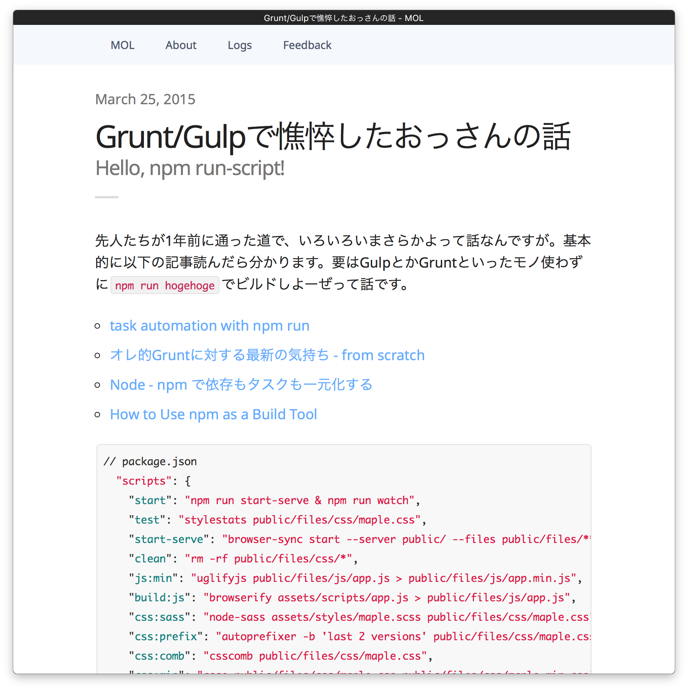

<html>
<head>
  <link rel="stylesheet" href="../../src/talkie.min.css">
	<link rel="stylesheet" href="../../src/talkie-default.min.css">
  <link rel="stylesheet" href="https://cdnjs.cloudflare.com/ajax/libs/highlight.js/8.9.1/styles/monokai_sublime.min.css">
</head>
<body>

<!-- Pure HTML style -->


<script layout="cover" invert type="text/x-markdown">

<h1 style="letter-spacing:0.1em">チョット疲れたお話</h1>

2016.07.04 - Yahoo! JAPAN 社内勉強会 - [@t32k](https://twitter.com/t32k)

</script>


<script layout="bullets" type="text/x-markdown">

## @t32k です

- Kaizen Platform, Inc.
- Front-end Developer
- [http://t32k.me](http://t32k.me)
- [Frontend Weekly 幽霊キュレーター とか](https://frontendweekly.tokyo)
- [HTML5 Experts 幽霊部員 とか](https://html5experts.jp/t32k/)

</script>

<script layout="bullets" invert type="text/x-markdown"
        backface="./ss.png"
        backface-filter="brightness(.45)">
## Kaizen Platform Dashboard

- CoffeeScript/SCSS/Pug(jade),Slim
- **Angular.js 1.3.x** 
- middleman/webpack/gulp
- Single Page Application
</script>

<script layout="bullets" invert type="text/x-markdown"
        backface="./ss.png"
        backface-filter="brightness(.45)">
	## ユーザーに価値を提供できているのか？
</script>


<script layout="bullets" type="text/x-markdown">

## 疲れることに定評のあるt32k


</script>


<script layout="code" type="text/x-markdown">
## ルーティングの後に画面更新

画面遷移の開始と同時にページが真っ白とかは NG<br>
処理中は現状を残して、完了してから表示更新

```js
// 架空のコード、こうあってほしい雰囲気
router.addEventListener('changeRoute', () => {
  await justRouting(location.path);
  updatePageContent();
});


```

-----

これやるんなら、処理中にユーザーから別のオーダーがあったら、次の操作はキャンセルすべきです。
</script>

<script layout="bullets" type="text/x-markdown">
## アジェンダ

- 疲れた話 について
- 希望を見い出した について
- 実践 について
- ピリオドの向こう について

</script>

<script layout="title" invert type="text/x-markdown">
## 疲れた（ ＾ω＾）おっ

SPAとJSフレームワークうんぬん
</script>

<script src="//cdnjs.cloudflare.com/ajax/libs/highlight.js/8.9.1/highlight.min.js"></script>
<script src="../../src/talkie.min.js"></script>
<script>Talkie();</script>
</body>
</html>


